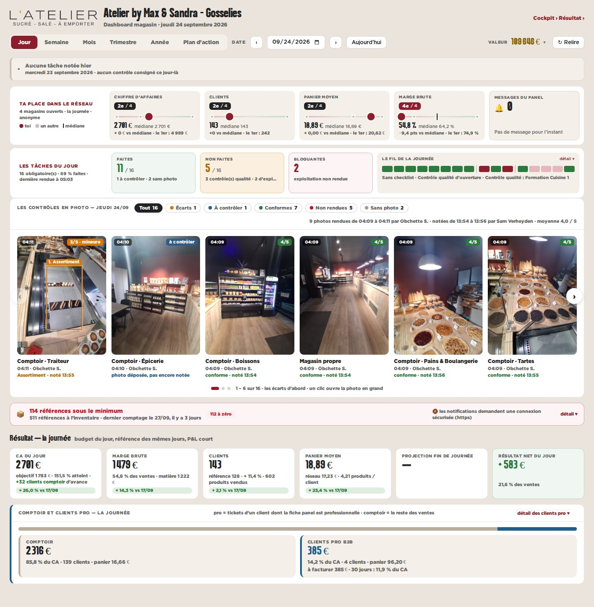
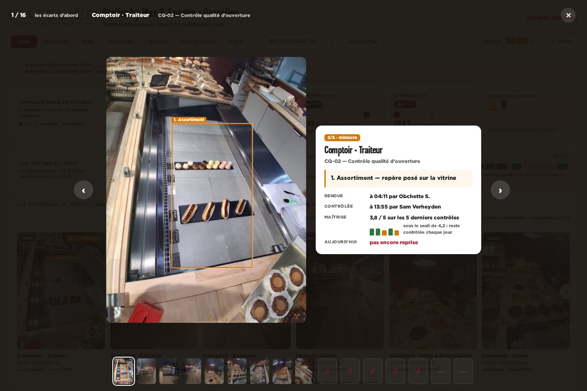
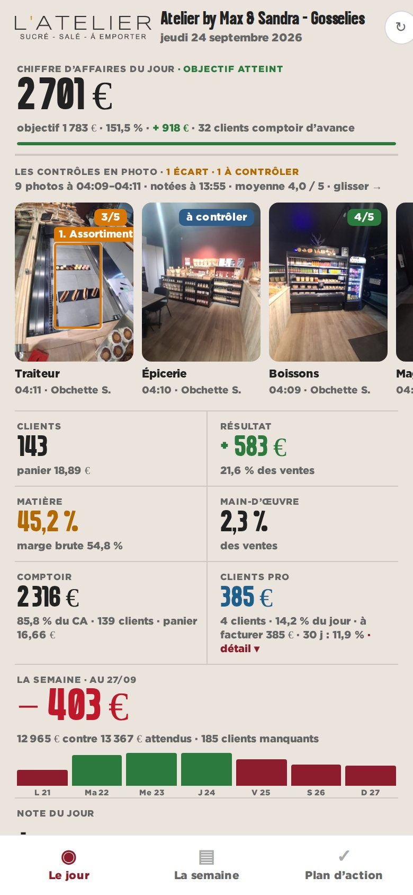

maquette · dashboard magasin · vue Jour · Gosselies, jeudi 24/09/2026 · données réelles du panel
A — Un carrousel « Les contrôles en photo »
Une bande de photos sous « Les tâches du jour » : les écarts d’abord, puis ce qui attend le consultant, puis le conforme, et les contrôles jamais rendus en case vide. Un clic ouvre la photo en grand avec le repère, le constat et la maîtrise.
Pour
- Rien ne change de place : la bande s’ajoute à la vue Jour.
- Lisible en cinq secondes : l’écart orange saute aux yeux.
- Même visionneuse au bureau et au téléphone.
Contre
- 16 cartes : il faut faire défiler pour tout voir.
- Peu de place pour l’historique d’une tâche sans ouvrir la photo.

bureau — la bande

bureau — un clic : la photo en grand

téléphone — sous le chiffre du jour